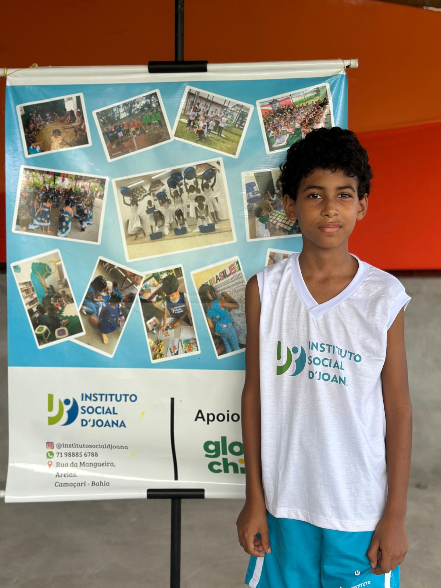
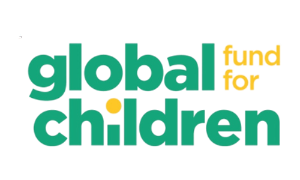
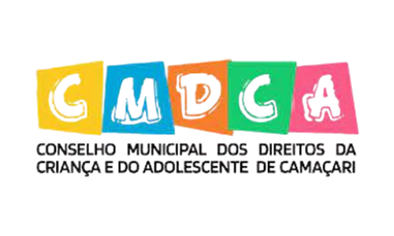
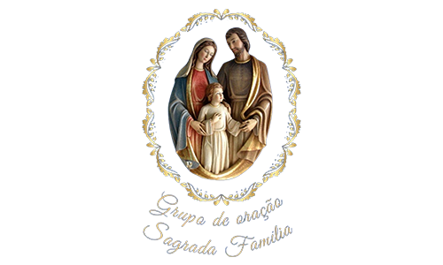
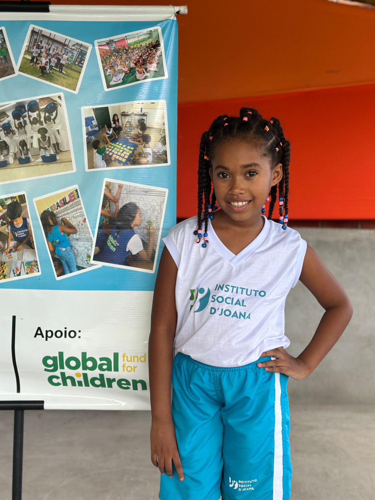
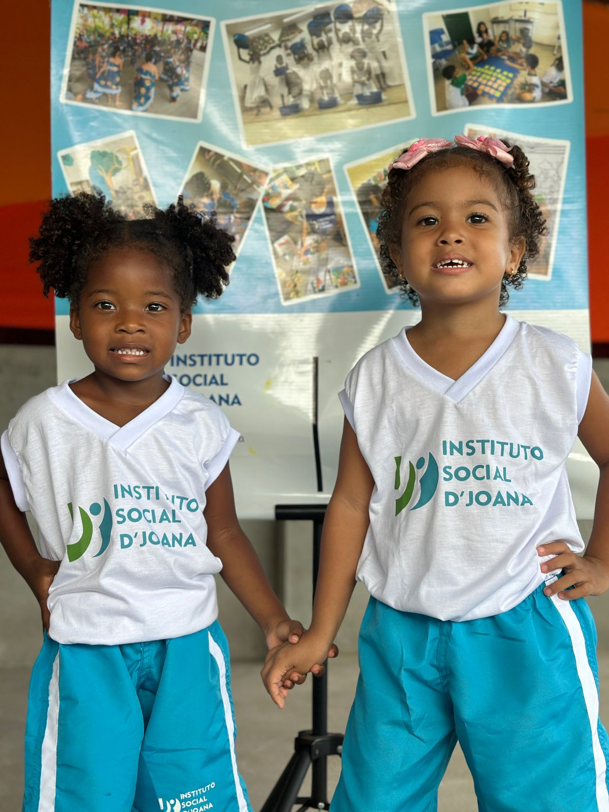

Educação · Cultura · Esporte · Acolhimento
Cuidar no presente
para transformar o futuro.
O Instituto Social D’Joana acolhe crianças e adolescentes no contraturno escolar com educação, cultura, esporte e oportunidades reais de desenvolvimento.
"Cada tarde depois da escola é uma oportunidade. Estamos aqui para não deixar nenhuma passar."
Nossa história
"Nascemos do sonho de transformar realidades por meio da educação, cultura e esporte."
Fundado em 2020 e formalizado em 2022, o Instituto Social D'Joana oferece atividades socioeducativas no contraturno escolar, criando um ambiente seguro, acolhedor e cheio de possibilidades para crianças e adolescentes.
Nosso compromisso é fortalecer vínculos, ampliar horizontes e contribuir para que cada infância encontre cuidado, presença e oportunidade.
- Educação
- Cultura
- Esporte
- Acolhimento
2020
fundação e início da atuação comunitária

Presença cotidiana
Um espaço onde acolhimento e oportunidade caminham juntos todos os dias.
Instituto Social D'Joana
Presença, cuidado e futuro.
Nosso impacto
Mais de cinco anos de transformação real.
Números que mostram o alcance e a força de um trabalho contínuo com a comunidade.
Nossas atividades
Projetos que desenvolvem talentos e vidas.
Ballet
Expressão corporal, disciplina e autoestima em um espaço de sensibilidade e descoberta.
Percussão
Ritmo, escuta, identidade cultural e fortalecimento do senso de coletivo.
Canto
Desenvolvimento vocal, repertório e confiança para se expressar com liberdade.
Leitura
Incentivo ao imaginário, à alfabetização e ao prazer de descobrir novos mundos.
Artes
Criatividade, vínculo e construção de identidade por meio da prática artística.
Futsal
Movimento, convivência, disciplina e espírito de equipe em cada treino.
Parceiros institucionais
Quem constrói esse impacto com a gente
Organizações, empresas e redes de apoio que fortalecem a capacidade do Instituto de transformar vidas.



Sua empresa ou organização pode fazer parte desta história.
Quero ser parceiroNotícias & Ações
Atualizações do Instituto
Iniciativas, conquistas e atualizações sobre o trabalho do Instituto Social D'Joana na comunidade.

Parceria em destaque
Uniforme novo: identidade, cuidado e pertencimento para nossas crianças
Uma conquista histórica do Projeto Construindo Sonhos. Na última sexta-feira, reunimos crianças e famílias para a entrega do novo uniforme — possível graças ao apoio de Larco Petróleo, Global Fund for Children e CMDCA Camaçari.
.jpeg)
Educação
A leitura é uma janela para o conhecimento
Com apoio do Global Fund for Children, o Instituto incentiva o hábito da leitura e o amor pelo aprendizado entre as crianças da comunidade de Areias, em Camaçari.

Esporte
Nossos jogadores em campo
O esporte como ferramenta de aprendizado e inclusão. O Projeto Construindo Sonhos — financiado pela SEDES e pelo Fundo Municipal da Criança (CMDCA) — leva o futsal como instrumento de desenvolvimento integral.
Galeria
Momentos que ficam.
Registros reais que mostram vínculo, presença e oportunidade no cotidiano do Instituto.


.jpeg)

.jpeg)

.jpeg)
.jpeg)
Apoie essa causa
Sua contribuição transforma vidas de verdade.
Com qualquer valor você ajuda a manter atividades, materiais e oportunidades para crianças e adolescentes da comunidade.
@institutosocialdjoana
Doação via Pix
Doe agora, qualquer valor
Toda contribuição ajuda a sustentar atividades, apoio e oportunidades.
institutosocialdjoana@gmail.com